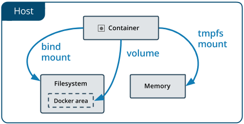

这一章介绍如何在 Docker 内部以及容器之间管理数据，在容器中管理数据主要有两种方式：
数据卷（Volumes）
挂载主机目录 (Bind mounts)
数据卷 是一个可供一个或多个容器使用的特殊目录，它绕过 UnionFS，可以提供很多有用的特性：
数据卷 可以在容器之间共享和重用
对 数据卷 的修改会立马生效
对 数据卷 的更新，不会影响镜像
数据卷 默认会一直存在，即使容器被删除
注意：
数据卷的使用，类似于 Linux 下对目录或文件进行 mount，镜像中的被指定为挂载点的目录中的文件会复制到数据卷中（仅数据卷为空时会复制）。
$ docker volume create my-vol查看所有的 数据卷
$ docker volume ls
DRIVER VOLUME NAME
local my-vol在主机里使用以下命令可以查看指定 数据卷 的信息
$ docker volume inspect my-vol
[
{
"Driver": "local",
"Labels": {},
"Mountpoint": "/var/lib/docker/volumes/my-vol/_data",
"Name": "my-vol",
"Options": {},
"Scope": "local"
}
]在用 docker run 命令的时候，使用 --mount 标记来将 数据卷 挂载到容器里。在一次 docker run 中可以挂载多个 数据卷。
下面创建一个名为 web 的容器，并加载一个 数据卷 到容器的 /usr/share/nginx/html 目录。
$ docker run -d -P \
--name web \
# -v my-vol:/usr/share/nginx/html \
--mount source=my-vol,target=/usr/share/nginx/html \
nginx:alpine在主机里使用以下命令可以查看 web 容器的信息
$ docker inspect web数据卷 信息在 "Mounts" Key 下面
"Mounts": [
{
"Type": "volume",
"Name": "my-vol",
"Source": "/var/lib/docker/volumes/my-vol/_data",
"Destination": "/usr/share/nginx/html",
"Driver": "local",
"Mode": "",
"RW": true,
"Propagation": ""
}
],$ docker volume rm my-vol数据卷 是被设计用来持久化数据的，它的生命周期独立于容器，Docker 不会在容器被删除后自动删除 数据卷，并且也不存在垃圾回收这样的机制来处理没有任何容器引用的 数据卷。如果需要在删除容器的同时移除数据卷。可以在删除容器的时候使用 docker rm -v 这个命令。
无主的数据卷可能会占据很多空间，要清理请使用以下命令
$ docker volume prune使用 --mount 标记可以指定挂载一个本地主机的目录到容器中去。
$ docker run -d -P \
--name web \
# -v /src/webapp:/usr/share/nginx/html \
--mount type=bind,source=/src/webapp,target=/usr/share/nginx/html \
nginx:alpine上面的命令加载主机的 /src/webapp 目录到容器的 /usr/share/nginx/html目录。这个功能在进行测试的时候十分方便，比如用户可以放置一些程序到本地目录中，来查看容器是否正常工作。本地目录的路径必须是绝对路径，以前使用 -v 参数时如果本地目录不存在 Docker 会自动为你创建一个文件夹，现在使用 --mount 参数时如果本地目录不存在，Docker 会报错。
Docker 挂载主机目录的默认权限是 读写，用户也可以通过增加 readonly 指定为 只读。
$ docker run -d -P \
--name web \
# -v /src/webapp:/usr/share/nginx/html:ro \
--mount type=bind,source=/src/webapp,target=/usr/share/nginx/html,readonly \
nginx:alpine加了 readonly 之后，就挂载为 只读 了。如果你在容器内 /usr/share/nginx/html 目录新建文件，会显示如下错误
/usr/share/nginx/html # touch new.txt
touch: new.txt: Read-only file system在主机里使用以下命令可以查看 web 容器的信息
$ docker inspect web挂载主机目录 的配置信息在 "Mounts" Key 下面
"Mounts": [
{
"Type": "bind",
"Source": "/src/webapp",
"Destination": "/usr/share/nginx/html",
"Mode": "",
"RW": true,
"Propagation": "rprivate"
}
],--mount 标记也可以从主机挂载单个文件到容器中
$ docker run --rm -it \
# -v $HOME/.bash_history:/root/.bash_history \
--mount type=bind,source=$HOME/.bash_history,target=/root/.bash_history \
ubuntu:18.04 \
bash
root@2affd44b4667:/# history
1 ls
2 diskutil list这样就可以记录在容器输入过的命令了。